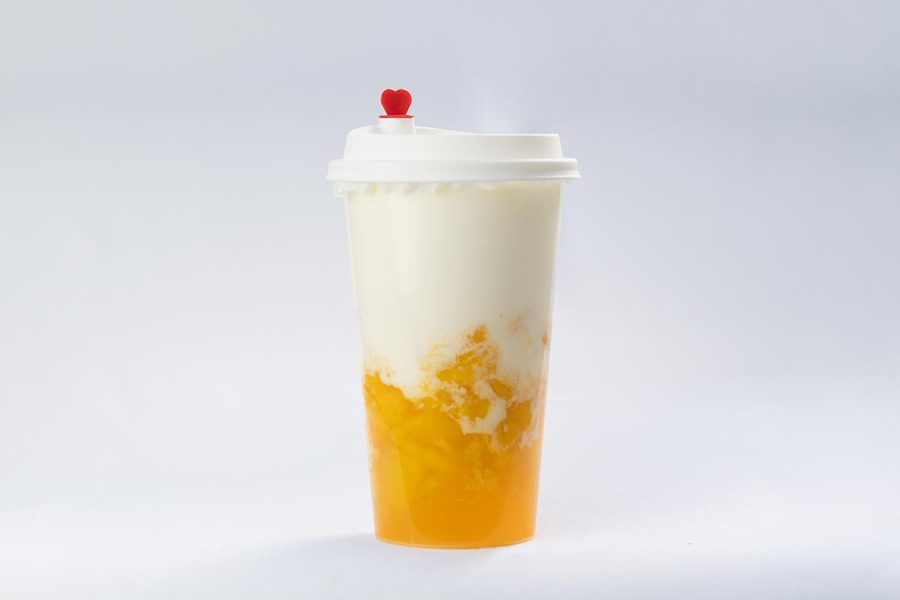
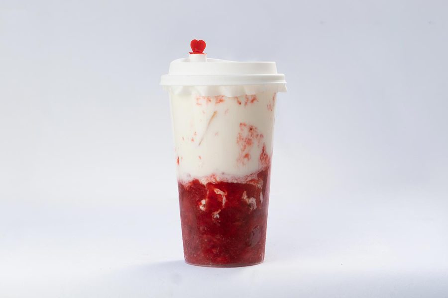
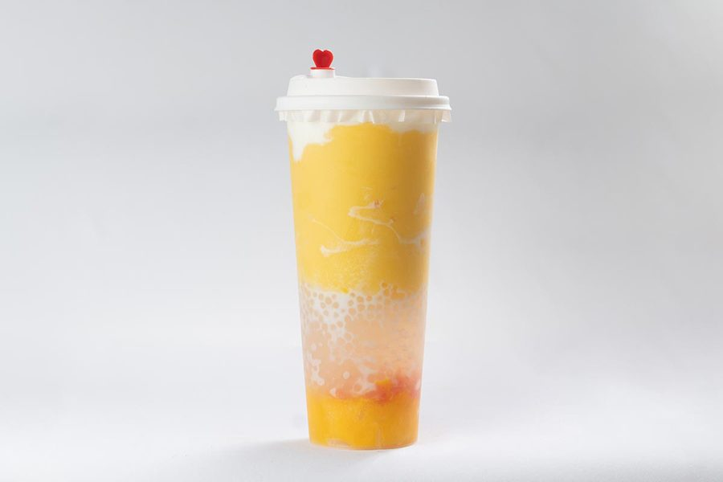
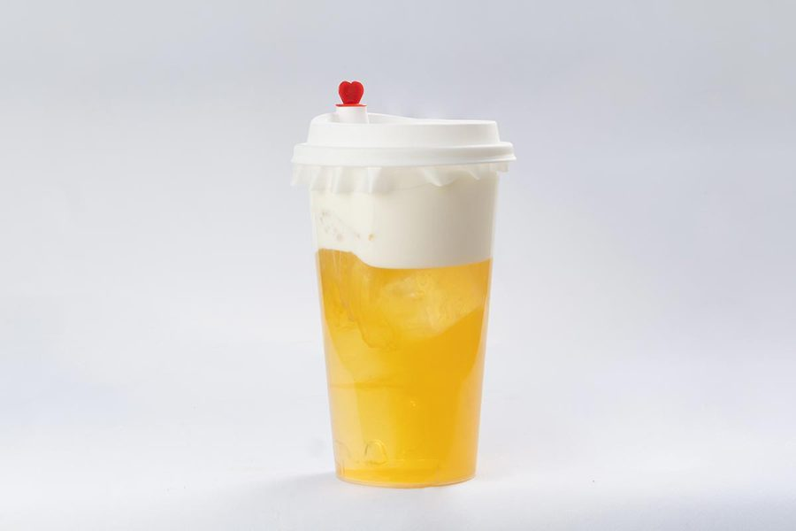
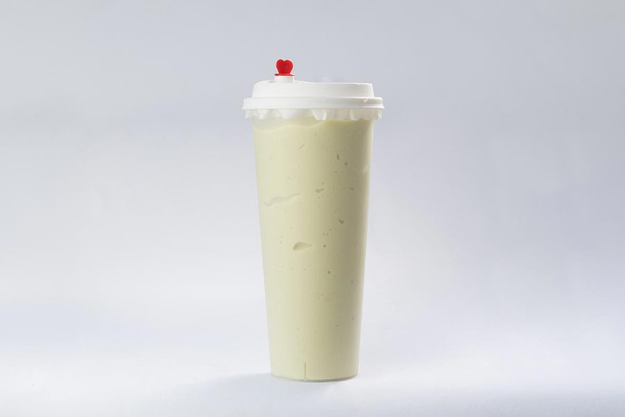
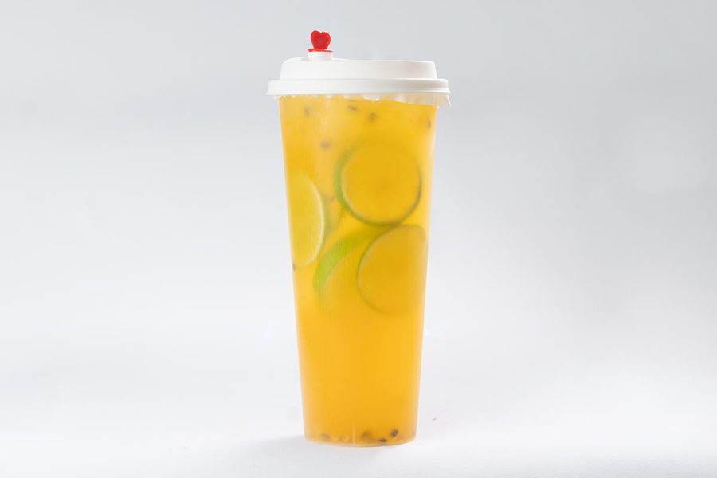

Delight Treats Just For You.タピオカミルクティー、フルーツティー、チーズティー。毎日夜遅くまで営業しています。

M Stand（エムスタンド）は、池袋にあるドリンクスタンドです。もちもちのタピオカ、季節のフルーツ、ふわふわのチーズフォームなど、一杯ずつ丁寧にお作りしています。お仕事帰りや夜のお散歩に、気軽にお立ち寄りください。
マンゴーミルクMango Milk

いちごミルクStrawberry Milk

楊枝甘露Mango Pomelo Sago

チーズティーCheese Foam Tea

アボカドミルクAvocado Milk

パッションフルーツティーPassion Fruit Tea
全メニューを見て注文する
Googleマップで開く →
Order on your phone, skip the wait.